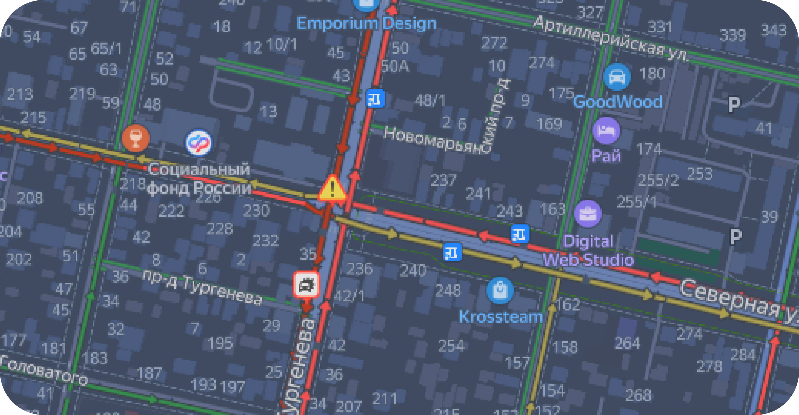

происшествия в
городе
всего 2

открыть карту
загруженность 7
АДРЕС
Пересечение ул. Северная и ул. Тургенева
РЕКОМЕНДАЦИИ
Нужно уменьшить длительность
красного сигнала на 5 сек, увеличить
длительность зеленого сигнала на 15 сек